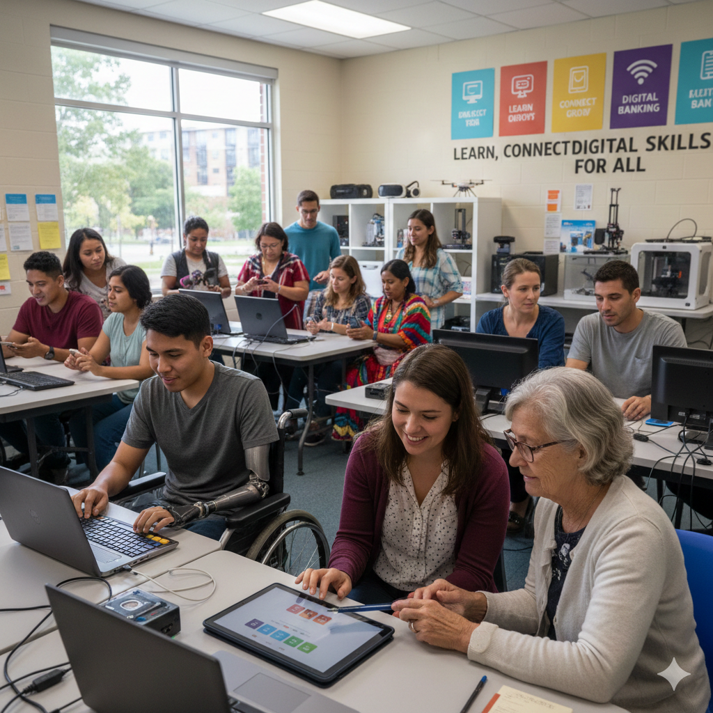

The digital divide refers to the inequality between social groups in access to, use of, and impact of Information and Communication Technologies (ICTs), including the internet and devices. Far from being a binary concept (having or not having access), it is a complex phenomenon with multiple dimensions that reflects and amplifies existing socioeconomic, geographic, gender, and educational inequalities.
Equitable access to technology is crucial, as the lack of connectivity and digital skills translates into the social and economic exclusion of vast sectors of the population, limiting their participation in the knowledge society.
Dimensions and Types of Digital Divide
The digital divide is not a single entity, but rather manifests itself in several interrelated dimensions that deepen inequality:
Access Gap
This is the most traditional and basic form, and it refers to the possibility or difficulty of people to have a telecommunications infrastructure (networks) and equipment (computers, tablets, smartphones) that allow connection to the Internet.
Main causes:
Usage Gap
Once physical access is achieved, this gap arises due to a lack of digital skills and competencies needed to effectively manage ICTs.
Many people, especially older adults or those with lower levels of education, may have a device or connection, but lack the minimum knowledge to:
- Perform online procedures (banking transactions, document requests).
- Look for quality information.
- Using complex software or applications.
Impact Gap
It refers to the ability to make the most of technology to improve quality of life, employment, education, and social participation. Two people can use the internet, but their results vary widely.
- Those with advanced skills can use the Internet for continuing education, digital entrepreneurship, or political participation, while others only use it for leisure or basic communication.
- It is also related to the quality of the connection (insufficient speed and bandwidth limit access to multimedia resources or high-quality online education).
Strategies to Close the Digital Divide and Promote Equity
Digital Equity is the ultimate goal: to ensure that all people have the access, affordability, skills, and relevance needed to fully participate in the digital society.
To achieve this, a comprehensive approach is needed that addresses all three dimensions of the gap:
Investment in Access and Infrastructure (Access Divide)
- Universal Service and Affordability: Promote policies to guarantee universal, affordable, high-quality, and non-discriminatory access to the Internet, especially in rural and underserved areas.
- Infrastructure Development: Public and private investment to extend high-speed broadband networks. Initiatives such as subsidies or tax reductions on devices and services.
- Community Connectivity: Creation of free, public access points (libraries, schools, community centers).
Digital Literacy and Training (Usage Divide)
- Digital Literacy Programs: Implement continuous and adapted training programs for all age groups, focused on developing basic and advanced digital skills.
- Focus on Vulnerable Groups: Design specific strategies for older adults, women, indigenous communities, people with disabilities, and low-income populations.
- Educational Integration: Include digital citizenship and digital competencies in the school curriculum from an early age.
Promotion of Relevant Content and Accessibility (Quality of Use Divide)
- Local Content and Local Languages: Promote the creation of digital content that is relevant to the needs and culture of specific communities.
- Technological Accessibility: Ensure that digital platforms and tools are accessible to people with disabilities, complying with universal accessibility standards.
- Meaningful Use: Educate not only on "how to use" but on "what to use it for," promoting the appropriation of technology for civic participation, health, and the economy.
